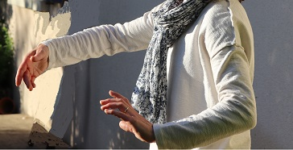

La pratique du Tai chi, du Qi Gong et de la méditation est accessible à tous. Chacun, à son
rythme, peut se détendre, se ressourcer, respirer,
influencer
sa posture, soulager ses douleurs etc. Chacun développe, à son rythme, des
attitudes/aptitudes pour mieux vivre son quotidien.
Cette pratique favorise l'équilibre du corps, de l'esprit et de l'énergie. La transmission selon Vlady
Stévanovitch associe des temps au sol : relaxation, assouplissement, méditation... et des temps debout :
plaisir de se déplacer dans l'espace. Elle harmonise le mental, les émotions, le physique et l'énergie. Elle
développe souplesse, équilibre, coordination, respiration, enracinement... Elle favorise la perception du Chi*
et sa circulation dans tout le corps.
Les mouvements sont portés par des générations de moines orientaux. Ils assouplissent le corps et l'esprit,
ils libèrent la respiration. Ils favorisent la détente et un meilleur équilibre physique, mental, émotionnel
et énergétique.

Je pratique le Tai Chi – Qi Gong, selon la transmission de Vlady Stévanovitch, depuis près de 15 ans. Je
transmets avec plaisir cet art millénaire, sans recherche de performance et attentive au confort de chacun. La
pratique est ouverte à tous, quel que soit l’âge ou la condition physique. Chacun arrive avec ses propres
motivations. Chacun est accueilli avec autant de bienveillance, qu’il vienne pour découvrir et pratiquer ces
arts corporels, pour améliorer sa qualité de vie, pour se déstresser, par recommandation d'un thérapeute, ou
pour faire des liens avec sa pratique professionnelle...
L’enseignement est progressif et transformateur. Il nous ouvre à la perception concrète du Chi, énergie
vitale, et à des moyens d’agir sur lui et avec lui. Cette ouverture colore les bases d’une démarche qui peut
transformer la vie, une Voie, comme disaient les Anciens. Mais dès le départ, elle nous aide à nous sentir
mieux dans notre corps et dans notre tête.
*le Chi est souffle de vie qui anime tout être vivant.


{kind=link}